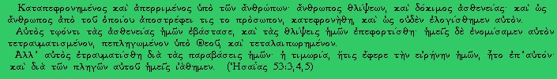

<!DOCTYPE HTML PUBLIC "-//W3C//DTD HTML 4.01 Transitional//EN" "http://www.w3c.org/TR/1999/REC-html401-19991224/loose.dtd">
<html xmlns:o="" xmlns="http://www.w3.org/1999/xhtml">
<head>
<!-- saved from url=(0030)http://ekklisia.heliohost.org/ -->
  <link rel="SHORTCUT ICON"
 href="http://ekklisia.heliohost.org/favicon.ico">
  <title>Θέματα από την Αγία Γραφή</title>
  <meta content="text/html; charset=windows-1253"
 http-equiv="Content-Type">
  <meta http-equiv="Content-Language" content="el">
  <meta name="ProgId" content="Word.Document">
  <meta name="GENERATOR" content="MSHTML 8.00.6001.18943">
  <meta name="Originator" content="Microsoft Word 10">
  <link rel="Edit-Time-Data" href="index_files/editdata.mso">
<!--[if gte mso 9]>
<xml>
<o:documentproperties>
<o:author></o:author>
<o:lastauthor>n/a</o:lastauthor>
<o:revision>22</o:revision>
<o:totaltime>240</o:totaltime>
<o:created>2005-01-05T14:51:00Z</o:created>
<o:lastsaved>2005-05-07T22:40:00Z</o:lastsaved>
<o:pages>1</o:pages>
<o:words>6517</o:words>
<o:characters>35192</o:characters>
<o:company>n/a</o:company>
<o:lines>293</o:lines>
<o:paragraphs>83</o:paragraphs>
<o:characterswithspaces>41626</o:characterswithspaces>
<o:version>10.2625</o:version></o:documentproperties></xml><![endif]--><!--[if gte mso 9]>
<xml>
<w:worddocument>
<w:zoom>BestFit</w:zoom>
<w:spellingstate>Clean</w:spellingstate>
<w:grammarstate>Clean</w:grammarstate>
<w:browserlevel>MicrosoftInternetExplorer4</w:browserlevel></w:worddocument></xml>
<![endif]-->
  <style>@font-face {
	font-family: Wingdings;
}
@font-face {
	font-family: Arial Greek;
}
@font-face {
	font-family: Arial Narrow;
}
P.MsoNormal {
	MARGIN: 0cm 0cm 0pt; FONT-FAMILY: "Times New Roman"; COLOR: black; FONT-SIZE: 12pt; mso-style-parent: ""; mso-pagination: widow-orphan; mso-fareast-font-family: "Times New Roman"
}
LI.MsoNormal {
	MARGIN: 0cm 0cm 0pt; FONT-FAMILY: "Times New Roman"; COLOR: black; FONT-SIZE: 12pt; mso-style-parent: ""; mso-pagination: widow-orphan; mso-fareast-font-family: "Times New Roman"
}
DIV.MsoNormal {
	MARGIN: 0cm 0cm 0pt; FONT-FAMILY: "Times New Roman"; COLOR: black; FONT-SIZE: 12pt; mso-style-parent: ""; mso-pagination: widow-orphan; mso-fareast-font-family: "Times New Roman"
}
H1 {
	TEXT-ALIGN: center; MARGIN: 0cm 0cm 0pt; FONT-FAMILY: Arial; COLOR: black; FONT-SIZE: 18pt; FONT-WEIGHT: bold; mso-pagination: widow-orphan; mso-style-next: Normal; mso-outline-level: 1; mso-font-kerning: 0pt; mso-bidi-font-weight: normal
}
H2 {
	TEXT-ALIGN: center; MARGIN: 0cm 0cm 0pt; FONT-FAMILY: Arial; COLOR: black; FONT-SIZE: 14pt; FONT-WEIGHT: bold; mso-pagination: widow-orphan; mso-style-next: Normal; mso-outline-level: 2; mso-bidi-font-weight: normal; mso-bidi-font-size: 12.0pt
}
H3 {
	PAGE-BREAK-AFTER: avoid; MARGIN: 0cm 0cm 0pt; FONT-FAMILY: "Times New Roman"; COLOR: windowtext; FONT-SIZE: 12pt; FONT-WEIGHT: bold; mso-pagination: widow-orphan; mso-style-next: Normal; mso-outline-level: 3; mso-bidi-font-weight: normal; mso-bidi-font-size: 10.0pt; mso-layout-grid-align: none; punctuation-wrap: simple
}
P.MsoBodyText {
	FONT-STYLE: italic; MARGIN: 0cm 0cm 0pt; FONT-FAMILY: Arial; COLOR: windowtext; FONT-SIZE: 10pt; mso-pagination: widow-orphan; mso-fareast-font-family: "Times New Roman"; mso-layout-grid-align: none; punctuation-wrap: simple; mso-bidi-font-family: "Times New Roman"; mso-bidi-font-style: normal
}
LI.MsoBodyText {
	FONT-STYLE: italic; MARGIN: 0cm 0cm 0pt; FONT-FAMILY: Arial; COLOR: windowtext; FONT-SIZE: 10pt; mso-pagination: widow-orphan; mso-fareast-font-family: "Times New Roman"; mso-layout-grid-align: none; punctuation-wrap: simple; mso-bidi-font-family: "Times New Roman"; mso-bidi-font-style: normal
}
DIV.MsoBodyText {
	FONT-STYLE: italic; MARGIN: 0cm 0cm 0pt; FONT-FAMILY: Arial; COLOR: windowtext; FONT-SIZE: 10pt; mso-pagination: widow-orphan; mso-fareast-font-family: "Times New Roman"; mso-layout-grid-align: none; punctuation-wrap: simple; mso-bidi-font-family: "Times New Roman"; mso-bidi-font-style: normal
}
P.MsoBodyText2 {
	MARGIN: 0cm 0cm 0pt; FONT-FAMILY: Arial; COLOR: windowtext; FONT-SIZE: 10pt; mso-pagination: widow-orphan; mso-fareast-font-family: "Times New Roman"; mso-layout-grid-align: none; punctuation-wrap: simple; mso-bidi-font-family: "Times New Roman"
}
LI.MsoBodyText2 {
	MARGIN: 0cm 0cm 0pt; FONT-FAMILY: Arial; COLOR: windowtext; FONT-SIZE: 10pt; mso-pagination: widow-orphan; mso-fareast-font-family: "Times New Roman"; mso-layout-grid-align: none; punctuation-wrap: simple; mso-bidi-font-family: "Times New Roman"
}
DIV.MsoBodyText2 {
	MARGIN: 0cm 0cm 0pt; FONT-FAMILY: Arial; COLOR: windowtext; FONT-SIZE: 10pt; mso-pagination: widow-orphan; mso-fareast-font-family: "Times New Roman"; mso-layout-grid-align: none; punctuation-wrap: simple; mso-bidi-font-family: "Times New Roman"
}
P.MsoBodyText3 {
	FONT-STYLE: italic; MARGIN: 0cm 0cm 0pt; FONT-FAMILY: Arial; COLOR: windowtext; FONT-SIZE: 10pt; FONT-WEIGHT: bold; mso-pagination: widow-orphan; mso-fareast-font-family: "Times New Roman"; mso-bidi-font-weight: normal; mso-layout-grid-align: none; punctuation-wrap: simple; mso-bidi-font-family: "Times New Roman"; mso-bidi-font-style: normal; mso-style-link: "Body Text 3 Char"
}
LI.MsoBodyText3 {
	FONT-STYLE: italic; MARGIN: 0cm 0cm 0pt; FONT-FAMILY: Arial; COLOR: windowtext; FONT-SIZE: 10pt; FONT-WEIGHT: bold; mso-pagination: widow-orphan; mso-fareast-font-family: "Times New Roman"; mso-bidi-font-weight: normal; mso-layout-grid-align: none; punctuation-wrap: simple; mso-bidi-font-family: "Times New Roman"; mso-bidi-font-style: normal; mso-style-link: "Body Text 3 Char"
}
DIV.MsoBodyText3 {
	FONT-STYLE: italic; MARGIN: 0cm 0cm 0pt; FONT-FAMILY: Arial; COLOR: windowtext; FONT-SIZE: 10pt; FONT-WEIGHT: bold; mso-pagination: widow-orphan; mso-fareast-font-family: "Times New Roman"; mso-bidi-font-weight: normal; mso-layout-grid-align: none; punctuation-wrap: simple; mso-bidi-font-family: "Times New Roman"; mso-bidi-font-style: normal; mso-style-link: "Body Text 3 Char"
}
A:link {
	COLOR: blue; TEXT-DECORATION: underline; text-underline: single
}
SPAN.MsoHyperlink {
	COLOR: blue; TEXT-DECORATION: underline; text-underline: single
}
A:visited {
	COLOR: purple; TEXT-DECORATION: underline; text-underline: single
}
SPAN.MsoHyperlinkFollowed {
	COLOR: purple; TEXT-DECORATION: underline; text-underline: single
}
P {
	FONT-FAMILY: "Times New Roman"; COLOR: black; MARGIN-LEFT: 0cm; FONT-SIZE: 12pt; MARGIN-RIGHT: 0cm; mso-pagination: widow-orphan; mso-fareast-font-family: "Times New Roman"; mso-margin-top-alt: auto; mso-margin-bottom-alt: auto
}
PRE {
	MARGIN: 0cm 0cm 0pt; FONT-FAMILY: "Courier New"; COLOR: black; FONT-SIZE: 10pt; tab-stops: 45.8pt 91.6pt 137.4pt 183.2pt 229.0pt 274.8pt 320.6pt 366.4pt 412.2pt 458.0pt 503.8pt 549.6pt 595.4pt 641.2pt 687.0pt 732.8pt; mso-pagination: widow-orphan; mso-fareast-font-family: "Times New Roman"
}
SPAN.BodyText3Char {
	FONT-STYLE: italic; FONT-FAMILY: Arial; FONT-WEIGHT: bold; mso-bidi-font-weight: normal; mso-bidi-font-style: normal; mso-style-link: "Body Text 3"; mso-style-name: "Body Text 3 Char"; mso-ascii-font-family: Arial; mso-hansi-font-family: Arial; mso-ansi-language: EL; mso-fareast-language: EL; mso-bidi-language: AR-SA
}
SPAN.SpellE {
	mso-style-name: ""; mso-spl-e: yes
}
DIV.Section1 {
	page: Section1
}
OL {
	MARGIN-BOTTOM: 0cm
}
UL {
	MARGIN-BOTTOM: 0cm
}
  </style><!--[if gte mso 10]>
<style>
/* Style Definitions */
table.MsoNormalTable
{mso-style-name:&quot;Table Normal&quot;;
mso-tstyle-rowband-size:0;
mso-tstyle-colband-size:0;
mso-style-noshow:yes;
mso-style-parent:&quot;&quot;;
mso-padding-alt:0cm 5.4pt 0cm 5.4pt;
mso-para-margin:0cm;
mso-para-margin-bottom:.0001pt;
mso-pagination:widow-orphan;
font-size:10.0pt;
font-family:&quot;Times New Roman&quot;;}</style><![endif]-->
  <meta name="Author" content="">
<!--[if gte mso 9]>
<xml>
<o:shapelayout v:ext="edit">
<o:idmap v:ext="edit" data="1"/></o:shapelayout></xml><![endif]-->
</head>
<body style="" vlink="#800080" alink="#ff0080" bgcolor="#ccffff"
 lang="EL" link="#0000ff">
<div class="Section1">
<blockquote style="margin-top: 5pt; margin-bottom: 5pt;">
  <p style="text-align: center;" class="MsoNormal" align="center"><span>&nbsp;&nbsp;&nbsp;&nbsp;&nbsp;
  </span> <a href="index_files/isaias2.jpg"><span
 style="color: black; text-decoration: none;"> </span></a><span>&nbsp;&nbsp;<a
 href="isaias2.jpg"></a></span></p>
  <p style="text-align: justify;" class="MsoNormal"><o:p>&nbsp;</o:p></p>
</blockquote>
<p></p>
<p style="text-align: center;" class="MsoNormal" align="center"><strong><span
 style="font-family: 'Arial Greek'; color: rgb(204, 0, 0);">Θέματα από
την Αγία Γραφή :</span></strong></p>
<pre style="text-align: center;"><a
 href="http://ekklisia.heliohost.org/truechurch.htm">Ψάχνοντας την αληθινή εκκλησία μέσα στον χριστιανικό κόσμο</a></pre>
<pre
 style="margin: 0cm 0cm 0pt; text-align: center; font-family: Courier New; color: black; font-size: 10pt;"><a
 style="color: blue; text-decoration: underline;"
 href="http://ekklisia.heliohost.org/law.htm">Ο νόμος του Θεού και ο νόμος του <span
 class="SpellE">Μωησέως</span> (Οι Δέκα Εντολές ποτέ ΔΕΝ καταργήθηκαν!)</a><span
 lang="en-us"> </span><font color="#ff0000" face="Arial Black"><b>(UPDATED!)</b></font></pre>
<pre style="text-align: center;"><a
 href="http://ekklisia.heliohost.org/rapture.htm">Η αλήθεια για την Αρπαγή της Εκκλησίας</a></pre>
<pre style="text-align: center;"><u><a
 href="http://ekklisia.heliohost.org/antichrist.htm">Ποιος είναι ο Αντίχριστος ;<span
 style="text-decoration: none;"> </span></a></u></pre>
<pre style="text-align: center;"><a
 href="http://ekklisia.heliohost.org/markbeast.htm">Η σφραγίδα του Θεού και το χάραγμα του θηρίου</a></pre>
<pre
 style="margin: 0cm 0cm 0pt; text-align: center; font-family: Courier New; color: rgb(0, 0, 255); font-size: 10pt;"><a
 style="color: blue; text-decoration: underline;"
 href="http://ekklisia.heliohost.org/Vdeligma.htm">Τι είναι το βδέλυγμα της ερημώσεως;</a> </pre>
<pre
 style="margin: 0cm 0cm 0pt; text-align: center; font-family: Courier New; color: rgb(0, 0, 255); font-size: 10pt;"><a
 href="http://ekklisia.heliohost.org/666.htm"><span
 style="text-decoration: underline;">To 17o κεφ. της Αποκάλυψης - Τι είναι ο αριθμός του θηρίου 666;</span></a></pre>
<div align="center">
<pre
 style="margin: 0cm 0cm 0pt; font-family: Courier New; color: rgb(0, 0, 255); font-size: 10pt;"><a
 href="http://ekklisia.heliohost.org/death.htm"><span
 style="text-decoration: underline;">Η πρώτη και μεγαλύτερη απάτη του σατανά</span></a> </pre>
</div>
<p style="text-align: center;" class="MsoNormal" align="center">&nbsp;</p>
<p style="text-align: center;" class="MsoNormal" align="center"><strong><span
 style="font-family: 'Arial Greek'; color: rgb(204, 0, 0);">Γενικά
Θέματα : <o:p></o:p></span></strong></p>
<pre
 style="margin: 0cm 0cm 0pt; text-align: center; font-family: Courier New; color: black; font-size: 10pt;">           <a
 style="color: blue; text-decoration: underline;"
 href="http://ekklisia.heliohost.org/aboutsda.htm">Ποιοι είναι οι <span
 class="SpellE">Αντβεντιστές</span>;</a> <font color="#ff0000"
 face="Arial Black"><b>(UPDATED!)</b></font></pre>
<pre
 style="margin: 0cm 0cm 0pt; text-align: center; font-family: Courier New; color: black; font-size: 10pt;"><a
 style="color: blue; text-decoration: underline;"
 href="http://ekklisia.heliohost.org/name_gr.htm">Τι σημαίνει η λέξη "<span
 class="SpellE">Αντβεντιστής</span>";</a></pre>
<pre
 style="margin: 0cm 0cm 0pt; text-align: center; font-family: Courier New; color: black; font-size: 10pt;"><a
 style="color: blue; text-decoration: underline;"
 href="http://ekklisia.heliohost.org/loveofgod.htm">Η Αγάπη του Θεού για τον άνθρωπο</a></pre>
<p style="text-align: center;" class="MsoNormal" align="center">&nbsp;</p>
<p style="text-align: center;" class="MsoNormal" align="center"><strong><span
 style="font-family: 'Arial Greek'; color: rgb(204, 0, 0);">Αγαπημένα <span
 class="SpellE">Links</span> :</span></strong> </p>
<p style="text-align: center;" class="MsoNormal" align="center"><span
 style="font-family: 'Courier New'; font-size: 10pt;"><a
 style="color: blue; text-decoration: underline;"
 href="http://www.adventist.gr/">Ελληνική Εκκλησία <span class="SpellE">Αντβεντιστών</span>
7ης Η</a></span><span class="SpellE"><span
 style="font-family: Courier New; color: blue; font-size: 10pt; text-decoration: underline;"><a
 href="http://www.adventist.gr/"><span
 style="font-family: 'Courier New'; color: blue; font-size: 10pt; text-decoration: underline;">μέρ</span></a><a
 style="font-family: Courier New; color: blue; font-size: 10pt; text-decoration: underline;"
 href="http://www.adventist.gr/">ας</a><span
 style="font-family: 'Courier New'; color: blue; font-size: 10pt; text-decoration: underline;">
(official site)</span></span></span></p>
<p style="text-align: center;" class="MsoNormal" align="center">
<a href="http://delongdirect.com/sermons/SERMONS/Stephen%20Bohr/"><span
 style="font-family: Courier New; color: blue; font-size: 10pt;">Ηχογραφημένα
κηρύγματα σε μορφή mp3 από τον Stephen Bohr</span></a></p>
<p style="text-align: center;" class="MsoNormal" align="center"><span
 style="font-family: 'Courier New'; color: rgb(204, 0, 0); font-size: 10pt;"><span
 lang="EN-US"><a href="http://www.biblelight.net/">Bible</a></span><a
 href="http://www.biblelight.net/"><span lang="EN-US"> </span><span
 lang="EN-US">Light</span><span lang="EN-US"> </span><span lang="EN-US">Homepage</span></a></span><span
 style="font-family: 'Courier New'; font-size: 10pt;"> </span></p>
<p style="text-align: center;" class="MsoNormal" align="center"><span
 style="font-family: 'Courier New'; color: rgb(204, 0, 0); font-size: 10pt;"
 lang="EN-US">&nbsp;&nbsp;</span><a href="http://www.amazingfacts.org/"><font
 size="2"><span style="font-family: Courier New;">Amazing Facts</span></font><span
 style="font-family: 'Courier New'; font-size: 10pt;"> </span></a></p>
<p style="text-align: center;" class="MsoNormal" align="center"><font
 face="Courier New" size="2"><a
 style="color: blue; text-decoration: underline;"
 href="http://www.midnightcrymedia.com/">Midnight Cry Media</a></font></p>
<p style="text-align: center;" class="MsoNormal" align="center"><span
 style="font-family: 'Courier New'; color: rgb(204, 0, 0); font-size: 10pt;"><a
 href="http://www.666man.net/"><span lang="EN-US">www</span>.666<span
 lang="EN-US">man</span>.<span lang="EN-US">net</span></a></span><span
 style="font-family: 'Courier New'; font-size: 10pt;"> </span></p>
<p style="text-align: center;" class="MsoNormal" align="center">&nbsp;</p>
<p style="" class="MsoNormal" align="center"><strong><span
 style="font-family: Arial Greek; color: rgb(204, 0, 0);">Χριστιανική TV<span
 style="font-family: 'Arial Greek'; color: rgb(204, 0, 0);">:</span></span></strong></p>
<p class="MsoNormal" align="center">Υπάρχει χριστιανική TV; Αν ξέρετε
αγγλικά, ασφαλώς και ναί! </p>
<p class="MsoNormal" align="center">Αντί των σκουπιδιών που μας
προσφέρει η πλειονότητα των ελληνικών τηλεοπτικών καναλιών </p>
<p class="MsoNormal" align="center">(βία, σέξ, διαφθορά, λογομαχίες
κλπ), η συνεχής θέαση των οποίων καθίσταται επιβλαβής για την ψυχή, </p>
<p class="MsoNormal" align="center">εναλλακτικά, μπορείτε να
παρακολουθείτε προγράμματα&nbsp; χριστιανικού περιεχομένου </p>
<p class="MsoNormal" align="center">τα οποία εκπέμπονται από τον <strong><u>δορυφόρο
Hotbird 13E</u> :</strong></p>
<p class="MsoNormal" align="center"><strong>1) 3ΑΒΝ</strong>,&nbsp;
Συχνότητα 12207 MHz,&nbsp; Πόλωση Horizontal, SR 27500, FEC 3/4</p>
<p class="MsoNormal" align="center"><strong>2)</strong> <strong>Hope
Channel</strong>, Συχνότητα 11013 MHz,&nbsp; Πόλωση Horizontal, SR
27500, FEC 3/4</p>
<p class="MsoNormal" align="center">Σας τα συστήνω ενθέρμως!</p>
<p style="" class="MsoNormal" align="center">&nbsp;</p>
<p style="" class="MsoNormal" align="center"><strong><span
 style="font-family: Arial Greek; color: rgb(204, 0, 0);">Το φυλλάδιό
μας </span></strong></p>
<p class="MsoNormal" align="center">Ενα απλό φυλλάδιο, με το οποίο
προσπαθούμε να ενημερώσουμε τους Ελληνες σχετικά με τα 3
τελευταία&nbsp; και επείγοντα </p>
<p class="MsoNormal" align="center">μηνύματα που ο Θεός στέλνει στους
ανθρώπους, και ιδιαίτερα σε εκείνους που θεωρούν τον εαυτό τους ότι
είναι χριστιανοί,&nbsp; </p>
<p class="MsoNormal" align="center">λίγο πριν τη Δευτέρα Παρουσία του
Χριστού. Τα μηνύματα αυτά βρίσκονται στο 14ο κεφ. εδ. 6-13 της
Αποκάλυψης. Τα μηνύματα </p>
<p class="MsoNormal" align="center">αυτά είναι τα <u>τελευταία</u>
μηνύματα του Θεού προς τους ανθρώπους γιατι αμέσως μετά, στο 14ο κεφ.εδ
14-17 εμφανίζεται ο Χριστός </p>
<p class="MsoNormal" align="center">- θερίζων τη γη - κατά τη Δευτέρα
Παρουσία. Ολα τα υπόλοιπα μηνύματα που ακούτε από τα διάφορα
χριστιανικά δόγματα</p>
<p class="MsoNormal" align="center">ως προφητείες αγίων κλπ <u>δεν</u>
στηρίζονται πουθενά στο Λόγο του Θεού, την Αγία Γραφή και είναι εκ του
πονηρού.&nbsp;&nbsp; </p>
<p class="MsoNormal" align="center">Το φυλλάδιο μας μπορείτε να το
κατεβάσετε από εδώ:</p>
<p class="MsoNormal" align="center"><a
 href="http://ekklisia.heliohost.org/fylladio_front.pdf">Εξωτερική όψη</a></p>
<p class="MsoNormal" align="center"><a
 href="http://ekklisia.heliohost.org/fylladio_back.pdf">Εσωτερική όψη</a></p>
<div class="Section1">
<p class="MsoNormal" align="center">&nbsp;&nbsp;&nbsp;&nbsp;&nbsp;&nbsp;&nbsp;&nbsp;&nbsp;&nbsp;
&nbsp;&nbsp;&nbsp;&nbsp;&nbsp;&nbsp; . </p>
<div align="center">
<div style="text-align: center;"></div>
<table id="table1" class="MsoNormal" bordercolordark="#000000"
 width="55%" border="3" bordercolor="#000000" cellpadding="0" cols="2">
  <tbody>
    <tr>
      <td style="padding: 0.75pt;" width="99%" align="middle">
      <div style="text-align: center;"> </div>
      <div style="text-align: center;" class="Section1">
      <p class="MsoNormal"><strong><span
 style="font-family: Times New Roman; font-size: 28pt;">3 Επείγοντα
Μηνύματα</span></strong></p>
      <p class="MsoNormal"><strong><span
 style="font-family: Times New Roman; font-size: 28pt;">του Κυρίου </span></strong></p>
      <p class="MsoNormal"><strong><span
 style="font-family: Times New Roman; font-size: 28pt;">σε Σένα !</span></strong></p>
      </div>
      <p class="MsoNormal"><span style="font-family: Arial Narrow;"><font
 size="3">Γνωρίζεις ότι η Κρίση της ανθρωπότητας έχει ήδη αρχίσει στον
ουρανό και ότι πολύ σύντομα θα ολοκληρωθεί με την επιστροφή του Χριστού
για να αποδώσει στον καθένα το μισθό του σύμφωνα με τα έργα του; Ξέρεις
ποια είναι η απάντηση του Θεού στη θεωρία της εξέλιξης και στην αθέτηση
του Αγίου Νόμου Του και ιδιαίτερα της 4<sup>ης</sup> εντολής;</font></span></p>
      <p style="text-indent: -18pt; margin-left: 30.6pt;"
 class="MsoNormal"><font color="#cc0000"><font size="3"><span
 style="font-family: Wingdings; font-weight: 700;">&#216;</span></font><span
 style="font-variant: normal; font-style: normal; font-family: Times New Roman; font-weight: 700;"><font
 size="3">&nbsp;</font></span></font><strong><em><span
 style="font-family: Arial Narrow; color: rgb(204, 0, 0);"><font
 size="3">«...<u>Φοβήθητε</u> τον Θεόν και δότε δόξαν εις αυτόν, διότι <u>ήλθεν
      </u>η ώρα της κρίσεως αυτού, και προσκυνήσατε <u>τον ποιήσαντα</u>
τον ουρανόν και την γην και την θάλασσαν και τας πηγάς των υδάτων.»</font></span></em><span
 style="font-family: Arial Narrow;"><em><font color="#cc0000" size="3">
[Αποκ. 14:6-7]</font></em></span></strong></p>
      <p style="margin-left: 18pt;" class="MsoNormal"><strong><em><font
 size="3"></font></em></strong>&nbsp;</p>
      <p class="MsoNormal"><span style="font-family: Arial Narrow;"><font
 size="3">Γνωρίζεις ότι οι περισσότερες χριστιανικές εκκλησίες έχουν
αποστατήσει από το Λόγο του Θεού και για αυτό παρομοιάζονται από τον
Λόγο Του ως Βαβυλώνα επειδή διδάσκουν ψευδοδιδασκαλίες και ωθούν τους
πιστούς τους να αποστατούν από τον Νόμο Του; Παράλληλα ο Θεός καλεί τον
λαό Του που βρίσκεται μέσα σε αυτές να εξέλθει από αυτές ώστε να μην
λάβει από τις πληγές με τις οποίες θα κρίνει τις εκκλησίες αυτές.</font></span></p>
      <p style="text-indent: -12.6pt; margin-left: 30.6pt;"
 class="MsoNormal"><font color="#cc0000"><font size="3"><span
 style="font-family: Wingdings; font-weight: 700;">&#216;</span></font><span
 style="font-variant: normal; font-style: normal; font-family: Times New Roman; font-weight: 700;"><font
 size="3">&nbsp;</font></span></font><strong><span
 style="font-style: italic; font-family: Arial Narrow; color: rgb(204, 0, 0);"><font
 size="3">«Έπεσεν, έπεσε Βαβυλών η πόλις η μεγάλη, διότι εκ του οίνου
του θυμού της πορνείας αυτής επότισε πάντα τα έθνη»</font></span><em><span
 style="font-family: Arial Narrow;"><font color="#cc0000" size="3">
[Αποκ. 14:7]</font></span></em></strong></p>
      <p style="margin-left: 30.6pt;" class="MsoNormal"><span
 style="font-style: italic; font-family: Arial Narrow; color: rgb(204, 0, 0); font-weight: 700;"><font
 size="3">«Έπεσεν, έπεσε Βαβυλών η μεγάλη, και έγεινε κατοικητήριον
δαιμόνων&nbsp; και φυλακή παντός πνεύματος ακαθάρτου και φυλακή παντός
ορνέου ακαθάρτου και μισητού... </font></span></p>
      <p style="margin-left: 30.6pt;" class="MsoNormal"><span
 style="font-style: italic; font-family: Arial Narrow; color: rgb(204, 0, 0); font-weight: 700;"><font
 size="3"><u>Εξέλθετε εξ αυτής ο λαός μου</u>, διά να μη συγκοινωνήσητε
εις τας αμαρτίας αυτής, και να μη λάβητε εκ των πληγών αυτής» [Αποκ.
18:2-4]</font></span></p>
      <p class="MsoNormal"><span style="font-family: Arial Narrow;"><font
 size="3"></font></span>&nbsp;</p>
      <p class="MsoNormal"><span style="font-family: Arial Narrow;"><font
 size="3">Γνωρίζεις ότι όταν η καταπάτηση του Νόμου του Θεού, των 10
εντολών δηλαδή, λάβει παγκόσμιο χαρακτήρα τότε ο Θεός θα επέμβει για να
κρίνει την αμαρτωλή γενεά αυτού του κόσμου;</font></span></p>
      <p style="text-indent: -12.6pt; margin-left: 30.6pt;"
 class="MsoNormal"><font color="#cc0000"><font size="3"><span
 style="font-family: Wingdings; font-weight: 700;">&#216;</span></font><span
 style="font-variant: normal; font-style: normal; font-family: Times New Roman; font-weight: 700;"><font
 size="3">&nbsp;</font></span></font><strong><span
 style="font-style: italic; font-family: Arial Narrow; color: rgb(204, 0, 0);"><font
 size="3">«Όστις <u>προσκυνεί </u>το θηρίον και την εικόνα αυτού και
λαμβάνει χάραγμα επί του μετώπου αυτού ή επί της χειρός αυτού, και
αυτός θέλει πίει εκ του οίνου του θυμού του Θεού του κεκερασμένου
ακράτου εν τω ποτηρίω της οργής αυτού...»</font></span><em><span
 style="font-family: Arial Narrow;"><font color="#cc0000" size="3">
[Αποκ. 14:7]</font></span></em></strong></p>
      </td>
    </tr>
  </tbody>
</table>
</div>
<blockquote>
  <p style="text-align: center;" class="MsoNormal" align="center">&nbsp;</p>
  <p style="text-align: center;" class="MsoNormal" align="center"><strong><span
 style="font-family: Arial Greek; color: rgb(204, 0, 0);">Επικοινωνία :<br>
  </span></strong>Για να επικοινωνήσετε μαζί μου μπορείτε να στείλετε_<span
 lang="EN-US">e</span>-<span lang="EN-US">mail</span>:<span>&nbsp; </span><a
 style="color: blue; text-decoration: underline;"
 href="mailto:ekklisia@yahoo.com">εδώ</a><span
 style="color: rgb(204, 0, 0);"> <o:p></o:p></span></p>
  <p style="text-align: center;" class="MsoNormal" align="center"><span
 style="font-family: 'Courier New'; font-size: 10pt;"><em> <a
 style="color: blue; text-decoration: underline;"
 href="http://ekklisia.heliohost.org/address.htm">Διευθύνσεις εκκλησιών
στην Ελλάδα</a></em></span> <o:p><span
 style="font-family: 'Courier New'; font-size: 10pt;" lang="EN-US"></span><span
 style="font-family: 'Courier New'; font-size: 10pt;">(θα χαρούμε πολύ
να σας δούμε!)</span></o:p></p>
  <p style="" class="MsoNormal" align="center">&nbsp;</p>
  <p class="MsoNormal" align="center">&nbsp;</p>
</blockquote>
</div>
<div align="center">
<table style="width: 36.8%;" class="MsoNormalTable" border="0"
 cellpadding="0" cols="2">
  <tbody>
    <tr>
      <td style="padding: 0.75pt; width: 99.12%;" width="99%">
      <p style="text-align: center;" class="MsoNormal" align="center"><em><span
 style="font-family: Arial; color: rgb(0, 0, 153); font-size: 14pt;">’κουσε
Κάθε Μέρα</span></em><span style="font-family: Arial; font-size: 14pt;">
      <br>
      </span><span
 style="font-family: Wingdings; color: rgb(0, 0, 153); font-size: 24pt;">(</span><span
 style="color: rgb(0, 0, 153); font-size: 24pt;"> 210 - 5233709 )</span><span
 style="font-size: 24pt;"> <o:p></o:p></span></p>
      <p style="text-align: center;" class="MsoNormal" align="center"><em><span
 style="color: rgb(0, 0, 153);">Ένα Χαρούμενο Χριστιανικό Μήνυμα!</span></em></p>
      </td>
    </tr>
  </tbody>
</table>
<p class="MsoNormal" align="center">&nbsp;</p>
<p class="MsoNormal" align="center">&nbsp;</p>
<p class="MsoNormal" align="center">&nbsp;</p>
<p class="MsoNormal"><strong><u>Σημείωση:</u> </strong>Ορισμένες από
τις απόψεις που παρουσιάζονται στο άρθρο σχετικά με το 17ο κεφ.της
Αποκάλυψης είναι προσωπικές. </p>
</div>
</div>
<p class="MsoNormal"><!-- Start of StatCounter Code -->
<script type="text/javascript"> 
var sc_project=5043883; 
var sc_invisible=0; 
var sc_partition=57; 
var sc_click_stat=1; 
var sc_security="6599b8b2"; 
</script>
<script type="text/javascript"
 src="http://www.statcounter.com/counter/counter.js"></script><noscript></noscript><!-- End of StatCounter Code --></p>
</body>
</html>
